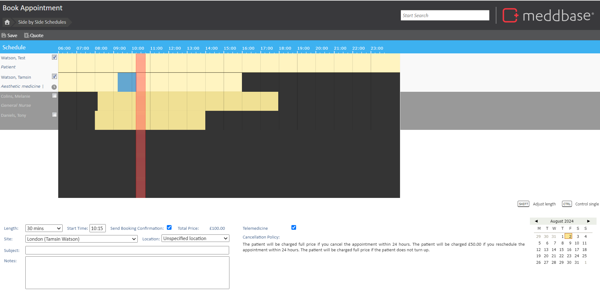
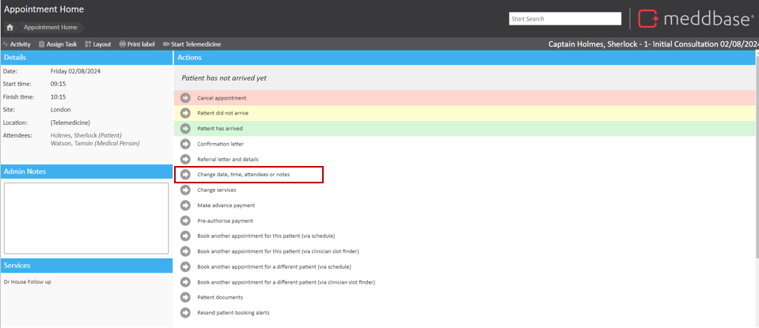

When booking an appointment, or once an appointment has been booked, you may need to add or modify the medical person attending the appointment. This can be done multiple ways.
This article will guide you through the different ways that you are able to add or modify attendees to an appointment.
When at the final stage of booking, you will be presented with the booking confirmation page. This page is where you are able to make any final amendments to the appointment.

This page allows you to see all the clinicians who are available on this day, the yellow sections of the schedule are when these clinicians are free. Any dark blue sections suggest that the clinician is already in a meeting or an appointment at this time.
You can add medical attendees to an appointment by clicking on the checkbox next to a clinician’s name. The box containing their name will become white when the clinician is selected as being an attendee. To remove an attendee, uncheck their name.
Adding and removing an attendee is simple, but what if a clinician only needs to attend for part of the appointment? The red bar indicates when the attendees will be booked in for this appointment, you can change the start time of the appointment by dragging this bar to the desired location.
If you wish to change the time a specific attendee is required, hold the ‘Shift’ key, click on the red bar over the specific attendees schedule and drag left to shorten the time, or right to lengthen it (this can also be modified by clicking the tick below the checkbox next to the clinician’s name).
Holding the ‘Control (ctrl)’ key and performing the same action will allow you to move the time that a specific clinician is required.
Other options on this page include:
Once you have made your changes, click save to confirm the booking.
If the appointment is in the past, a clinician is unavailable or if confirmations are not being sent, an alert will ask you if you wish to proceed. Click ‘Yes’ to confirm your booking or ‘No’ to make any necessary changes.
The ‘Adding / Modifying’ attendees’ page can be accessed during the booking process, or, once an appointment has been made, within the appointment home page.

This will take you to the booking confirmation page where you can add or modify attendees by following the instructions above.